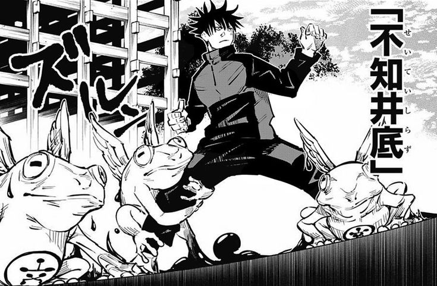

O Sapo pode parecer uma invocacao mais simples, mas ele e muito util quando o Megumi precisa imobilizar alguem e ganhar alguns segundos de vantagem. Isso tem tudo a ver com o estilo dele, que quase sempre pensa em como prender o inimigo antes de finalizar o combate. E um shikigami menos chamativo, mas bastante inteligente dentro da tecnica das Dez Sombras.